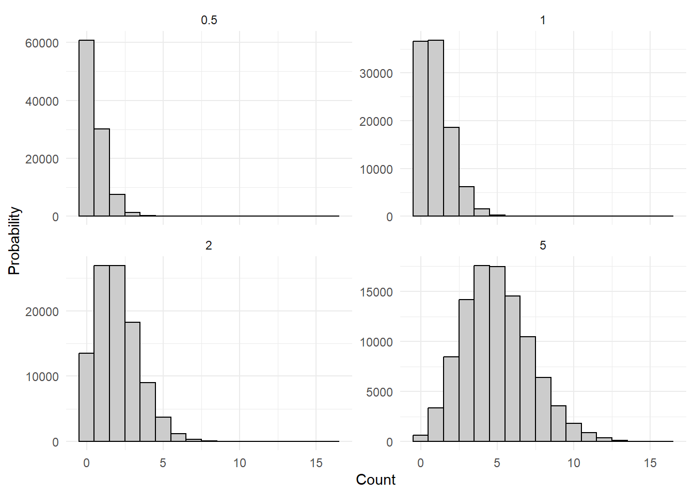
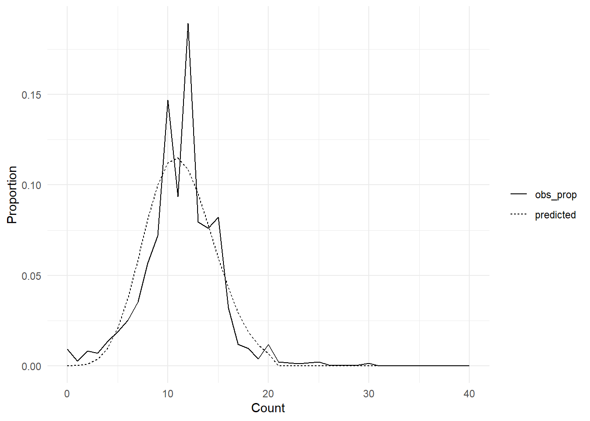
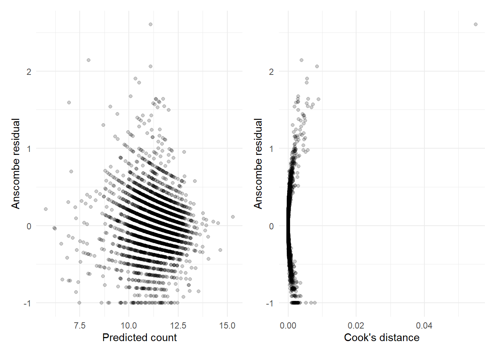

library(dplyr)
library(tidyr)
library(haven)
library(forcats)
library(ggplot2)
library(MASS)
library(pscl)
library(VGAM)
library(broom)
library(glue)
library(purrr)
set.seed(98765)
data_dir <- file.path("..", "mer_data_stata")
bw5k <- read_dta(file.path(data_dir, "bw5k.dta")) |>
mutate(across(where(haven::is.labelled), haven::as_factor))14 SME Chapter 13: Modelling Count Data
Note
This chapter reproduces and expands upon the analyses from the original Methods in Epidemiologic Research (MER) Chapter 18 (Dohoo, Martin, & Stryhn, 2012) using R with data sourced from ../mer_data_stata/. The chapter covers count data models - essential methods for analyzing outcomes that count events (like number of visits, episodes, or hospitalizations).
14.1 Replication Notes
- Data dependencies:
../mer_data_stata/bw5k.dtaand the derived fileprevis.dtawritten during execution. - Required R packages:
dplyr,tidyr,haven,forcats,ggplot2,MASS,pscl,VGAM,broom,glue,purrr. - Setup tips: Install via
install.packages(c("dplyr","tidyr","haven","forcats","ggplot2","MASS","pscl","VGAM","broom","glue","purrr")). - Execution: Run each chunk sequentially to regenerate all Poisson, negative binomial, zero-inflated, and hurdle models.
14.2 Theoretical Background
Understanding Count Data Models
Before we model count data, let’s understand why it needs special methods. Count data requires specialized models because it has unique characteristics (Dohoo, Martin, & Stryhn, 2012; Kirkwood & Sterne, 2003):
14.2.1 What is Count Data?
Count data is data that counts how many times something happened. Like: - Number of visits to the doctor (0, 1, 2, 3…) - Number of disease episodes (0, 1, 2, 3…) - Number of hospitalizations (0, 1, 2, 3…)
Key features: - Only whole numbers (0, 1, 2, 3…) - Can’t be negative - Often has many zeros
14.2.2 Why Not Regular Regression?
Regular regression assumes: - Outcomes can be any number (including decimals and negatives) - Errors are normally distributed
The problem: Counts can’t be negative or decimals! And they often have a skewed distribution (many zeros, few high values).
14.2.3 The Poisson Distribution
Poisson distribution is the natural distribution for counts. It assumes: - Events happen at a constant rate - Events are independent - Variance equals the mean
Think of it like: If events happen randomly at a constant rate (like cars passing a point), the number of events in a time period follows a Poisson distribution.
14.2.4 The Poisson Regression Model
Poisson regression models counts using the Poisson distribution. It’s like logistic regression but for counts instead of yes/no.
Key assumption: Variance equals the mean. This is often violated in real data.
14.2.5 When Poisson Doesn’t Fit: Overdispersion
Overdispersion means the variance is larger than the mean. Like: “The data is more variable than Poisson assumes.”
Why it happens: - Events aren’t independent (like disease episodes clustering) - Heterogeneity (people have different rates) - Missing predictors
14.2.6 Solutions for Overdispersion
14.2.7 1. Negative Binomial Regression
Negative binomial allows extra variability beyond Poisson. It’s like Poisson but with an extra parameter for overdispersion.
Think of it like: Poisson assumes everyone has the same rate. Negative binomial allows rates to vary between people.
14.2.8 2. Zero-Inflated Models
Zero-inflated models handle excess zeros. They assume two processes: - A process that generates zeros (like “never users”) - A process that generates counts (like “users”)
Example: Many people never visit the doctor (structural zeros), while others visit 0, 1, 2, or more times (sampling zeros).
14.2.9 3. Hurdle Models
Hurdle models also handle excess zeros, but differently: - First, model whether the count is zero or positive (the “hurdle”) - Then, model the positive counts
Think of it like: First decide if someone is a “user” or “non-user”, then model how much users use.
14.2.10 Choosing the Right Model
- Poisson: When variance ≈ mean and no excess zeros
- Negative binomial: When there’s overdispersion but no excess zeros
- Zero-inflated: When there are excess zeros and you want to model why
- Hurdle: When zeros are fundamentally different from positive counts
14.2.11 Model Comparison
We compare models using: - AIC/BIC: Lower is better (balances fit and complexity) - Likelihood ratio tests: Compare nested models - Residual diagnostics: Check if models fit well
In simple terms: Count data (like number of visits or episodes) needs special models because counts are whole numbers that can’t be negative. Poisson regression is the starting point, but real data often has extra variability (overdispersion) or too many zeros. Negative binomial handles overdispersion, and zero-inflated or hurdle models handle excess zeros. We choose the model that fits our data best.
14.3 Setup
What is this section doing?
This section prepares for modeling count data (like number of visits, number of events). Think of it like getting ready to predict whole numbers:
- Loading libraries: Getting tools for Poisson and negative binomial regression
- Reading data: Opening datasets with count outcomes (like number of prenatal visits)
- Setting random seed: Ensuring reproducible results
In simple terms: We’re preparing to model outcomes that are counts (0, 1, 2, 3… visits) rather than continuous numbers or yes/no categories. This requires special statistical methods.
14.4 Data Preparation
What is this section doing?
This section prepares count data for analysis. Think of it like organizing data about how many times something happened:
- Creating variables: Setting up the count outcome (like number of prenatal visits) and predictors
- Centering variables: Adjusting variables so they’re easier to interpret (like age - 28 instead of just age)
- Cleaning data: Removing incomplete records
In simple terms: We’re organizing data about counts (how many prenatal visits did each mother have?) and preparing to see what factors predict higher or lower counts.
previs <- bw5k |>
mutate(
white = if_else(mrace_c3 == "white", 1, 0, missing = NA_real_),
mage_28 = mage - 28,
tbo = as.numeric(tbo),
tbo_1 = tbo - 1,
gest = as.numeric(gest),
mar = fct_drop(factor(mar))
)
previs <- previs[, c("obs", "previs", "white", "mage_28", "tbo", "tbo_1", "meduc_c4", "gest", "mar")]
previs <- tidyr::drop_na(previs, previs, white, mage_28, tbo, tbo_1, meduc_c4, gest, mar)
write_dta(previs, file.path(data_dir, "previs.dta"))
previs |> glimpse()Rows: 5,000
Columns: 9
$ obs <dbl> 3580067, 2761610, 4005523, 802672, 3453512, 3188874, 570731, …
$ previs <dbl> 9, 11, 15, 12, 12, 11, 12, 13, 14, 10, 16, 25, 12, 6, 6, 12, …
$ white <dbl> 0, 1, 1, 1, 0, 1, 0, 1, 1, 0, 1, 1, 1, 1, 0, 1, 1, 0, 0, 1, 0…
$ mage_28 <dbl> 4, 0, 19, -4, 1, 1, 9, -2, -2, -2, -1, -11, -1, 2, -5, 8, 5, …
$ tbo <dbl> 8, 6, 1, 2, 4, 1, 3, 1, 2, 1, 4, 1, 3, 1, 1, 2, 2, 1, 2, 1, 3…
$ tbo_1 <dbl> 7, 5, 0, 1, 3, 0, 2, 0, 1, 0, 3, 0, 2, 0, 0, 1, 1, 0, 1, 0, 2…
$ meduc_c4 <fct> < hs dip, some col, univ deg, univ deg, some col, univ deg, <…
$ gest <dbl> 27, 40, 42, 33, 40, 40, 38, 41, 38, 40, 37, 43, 40, 43, 39, 3…
$ mar <fct> unmar, unmar, married, married, married, married, married, ma…14.5 Figure 18.1: Poisson Distributions
What is this section doing?
This section shows what Poisson distributions look like. Think of it like showing examples of how count data typically behaves:
- Poisson distribution: A mathematical pattern that count data often follows (like how many events happen in a time period)
- Different means: Showing how the distribution changes when the average count changes
- Visualization: Histograms showing the shape of the distribution
In simple terms: We’re showing what count data typically looks like. If the average is low (like 0.5), you see mostly 0s and 1s. If the average is higher (like 5), you see a wider spread. This helps us understand if our data fits the Poisson pattern.
poisson_sim <- tibble(
mean = rep(c(0.5, 1, 2, 5), each = 100000),
count = rpois(400000, lambda = rep(c(0.5, 1, 2, 5), each = 100000))
)
poisson_sim |>
filter(count <= 16) |>
ggplot(aes(x = count)) +
geom_histogram(binwidth = 1, boundary = -0.5, colour = "black", fill = "grey80") +
facet_wrap(~mean, scales = "free_y") +
labs(x = "Count", y = "Probability") +
theme_minimal()
14.6 Exercise 18.1: Poisson Models
What is this section doing?
This section fits Poisson regression models to count data. Think of it like predicting how many times something will happen:
- Poisson regression: A model for count data (like number of visits, number of events)
- Count models: Predicting the actual count (like “how many prenatal visits?”)
- Rate models: Predicting counts adjusted for time at risk (like “visits per month of pregnancy”)
In simple terms: We’re building models to predict counts. For example, “how many prenatal visits will a mother have?” based on her age, race, education, etc. Poisson regression is designed specifically for this type of data.
poisson_count <- glm(
previs ~ white + mage_28 + tbo_1 + meduc_c4,
family = poisson(),
data = previs
)
poisson_rate <- glm(
previs ~ white + mage_28 + tbo_1 + meduc_c4 + offset(log(gest)),
family = poisson(),
data = previs
)
bind_rows(
tidy(poisson_count, exponentiate = TRUE, conf.int = TRUE) |> mutate(model = "Count model"),
tidy(poisson_rate, exponentiate = TRUE, conf.int = TRUE) |> mutate(model = "Rate model")
)# A tibble: 14 × 8
term estimate std.error statistic p.value conf.low conf.high model
<chr> <dbl> <dbl> <dbl> <dbl> <dbl> <dbl> <chr>
1 (Intercept) 10.7 0.0124 191. 0 10.5 11.0 Coun…
2 white 1.04 0.00906 4.26 2.08e-5 1.02 1.06 Coun…
3 mage_28 1.00 0.000874 4.29 1.78e-5 1.00 1.01 Coun…
4 tbo_1 0.983 0.00325 -5.13 2.88e-7 0.977 0.990 Coun…
5 meduc_c4hs dip 1.06 0.0135 4.05 5.13e-5 1.03 1.08 Coun…
6 meduc_c4some c… 1.08 0.0143 5.40 6.53e-8 1.05 1.11 Coun…
7 meduc_c4univ d… 1.07 0.0143 4.87 1.14e-6 1.04 1.10 Coun…
8 (Intercept) 0.277 0.0124 -103. 0 0.271 0.284 Rate…
9 white 1.03 0.00906 3.72 2.03e-4 1.02 1.05 Rate…
10 mage_28 1.00 0.000876 4.43 9.46e-6 1.00 1.01 Rate…
11 tbo_1 0.987 0.00324 -4.19 2.80e-5 0.980 0.993 Rate…
12 meduc_c4hs dip 1.06 0.0135 4.13 3.56e-5 1.03 1.09 Rate…
13 meduc_c4some c… 1.08 0.0143 5.18 2.19e-7 1.05 1.11 Rate…
14 meduc_c4univ d… 1.07 0.0143 5.02 5.21e-7 1.04 1.11 Rate…baseline_rate <- exp(coef(poisson_rate)[["(Intercept)"]])
baseline_uni <- exp(coef(poisson_rate)[["(Intercept)"]] + coef(poisson_rate)[["meduc_c4univ deg"]])
white_older <- exp(coef(poisson_rate)[["(Intercept)"]] + coef(poisson_rate)[["white"]] + 10 * coef(poisson_rate)[["mage_28"]])
white_degree <- exp(coef(poisson_rate)[["(Intercept)"]] + coef(poisson_rate)[["white"]] + 10 * coef(poisson_rate)[["mage_28"]] + coef(poisson_rate)[["meduc_c4univ deg"]])
expected_39 <- 39 * white_degree
list(
baseline_rate = baseline_rate,
baseline_university = baseline_uni,
white_age38 = white_older,
white_degree = white_degree,
expected_39weeks = expected_39
)$baseline_rate
[1] 0.2773017
$baseline_university
[1] 0.2979762
$white_age38
[1] 0.298145
$white_degree
[1] 0.3203735
$expected_39weeks
[1] 12.4945714.7 Figure 18.2: Predicted vs Observed Counts
max_count <- 20
pred_probs <- tibble(
count = 0:max_count,
predicted = map_dbl(0:max_count, ~mean(dpois(.x, lambda = fitted(poisson_rate))))
)
observed_counts <- previs |>
count(previs) |>
mutate(obs_prop = n / sum(n)) |>
complete(previs = 0:max_count, fill = list(obs_prop = 0))
comparison <- observed_counts |>
rename(count = previs) |>
left_join(pred_probs, by = "count") |>
mutate(predicted = replace_na(predicted, 0))
comparison_long <- comparison |>
pivot_longer(cols = c(obs_prop, predicted), names_to = "type", values_to = "probability")
ggplot(comparison_long, aes(x = count, y = probability, linetype = type)) +
geom_line(colour = "black") +
labs(x = "Count", y = "Proportion", linetype = "") +
theme_minimal()
14.8 Dispersion and Diagnostics
residual_deviance <- deviance(poisson_rate)
df_residual <- df.residual(poisson_rate)
pearson_dispersion <- sum(residuals(poisson_rate, type = "pearson")^2) / df_residual
list(
residual_deviance = residual_deviance,
df_residual = df_residual,
pearson_dispersion = pearson_dispersion
)$residual_deviance
[1] 6681.849
$df_residual
[1] 4993
$pearson_dispersion
[1] 1.234806diag_df <- augment(poisson_rate, type.predict = "response", type.residuals = "deviance") |>
mutate(
pearson = residuals(poisson_rate, type = "pearson"),
anscombe = residuals(poisson_rate, type = "pearson") / sqrt(fitted(poisson_rate)),
cooks = cooks.distance(poisson_rate)
)
diag_df |>
summarise(
extreme_pearson = mean(abs(pearson) > 3),
max_anscombe = max(anscombe),
max_cooks = max(cooks)
)# A tibble: 1 × 3
extreme_pearson max_anscombe max_cooks
<dbl> <dbl> <dbl>
1 0.0248 2.60 0.0551plot1 <- ggplot(diag_df, aes(x = .fitted, y = anscombe)) +
geom_point(alpha = 0.2) +
labs(x = "Predicted count", y = "Anscombe residual") +
theme_minimal()
plot2 <- ggplot(diag_df, aes(x = cooks, y = anscombe)) +
geom_point(alpha = 0.2) +
labs(x = "Cook's distance", y = "Anscombe residual") +
theme_minimal()
patchwork::wrap_plots(plot1, plot2, ncol = 2)
14.9 Exercise 18.3: Negative Binomial Models
nb_model <- glm.nb(
previs ~ white + mage_28 + tbo_1 + meduc_c4 + offset(log(gest)),
data = previs
)
poisson_nb_compare <- bind_rows(
tidy(poisson_rate, exponentiate = TRUE, conf.int = TRUE) |> mutate(model = "Poisson"),
tidy(nb_model, exponentiate = TRUE, conf.int = TRUE) |> mutate(model = "Negative binomial")
)
list(
theta = nb_model$theta,
comparison = poisson_nb_compare
)$theta
[1] 53.13273
$comparison
# A tibble: 14 × 8
term estimate std.error statistic p.value conf.low conf.high model
<chr> <dbl> <dbl> <dbl> <dbl> <dbl> <dbl> <chr>
1 (Intercept) 0.277 0.0124 -103. 0 0.271 0.284 Pois…
2 white 1.03 0.00906 3.72 2.03e-4 1.02 1.05 Pois…
3 mage_28 1.00 0.000876 4.43 9.46e-6 1.00 1.01 Pois…
4 tbo_1 0.987 0.00324 -4.19 2.80e-5 0.980 0.993 Pois…
5 meduc_c4hs dip 1.06 0.0135 4.13 3.56e-5 1.03 1.09 Pois…
6 meduc_c4some c… 1.08 0.0143 5.18 2.19e-7 1.05 1.11 Pois…
7 meduc_c4univ d… 1.07 0.0143 5.02 5.21e-7 1.04 1.11 Pois…
8 (Intercept) 0.277 0.0136 -94.0 0 0.270 0.285 Nega…
9 white 1.03 0.00998 3.39 6.96e-4 1.01 1.05 Nega…
10 mage_28 1.00 0.000965 4.03 5.68e-5 1.00 1.01 Nega…
11 tbo_1 0.987 0.00357 -3.80 1.44e-4 0.980 0.993 Nega…
12 meduc_c4hs dip 1.06 0.0148 3.79 1.52e-4 1.03 1.09 Nega…
13 meduc_c4some c… 1.08 0.0157 4.73 2.22e-6 1.04 1.11 Nega…
14 meduc_c4univ d… 1.07 0.0157 4.57 4.79e-6 1.04 1.11 Nega…nb_res <- augment(nb_model, type.predict = "response", type.residuals = "pearson") |>
mutate(
deviance_resid = residuals(nb_model, type = "deviance"),
cooks = cooks.distance(nb_model)
)
nb_dispersion <- sum(nb_res$deviance_resid^2) / nb_model$df.residual
list(
dispersion = nb_dispersion,
extreme_pearson = mean(abs(nb_res$.resid) > 3)
)$dispersion
[1] 1.126926
$extreme_pearson
[1] 0.0148plot_nb1 <- ggplot(nb_res, aes(x = .fitted, y = .resid)) +
geom_point(alpha = 0.2) +
labs(x = "Predicted count", y = "Pearson residual") +
theme_minimal()
plot_nb2 <- ggplot(nb_res, aes(x = cooks, y = .resid)) +
geom_point(alpha = 0.2) +
labs(x = "Cook's distance", y = "Pearson residual") +
theme_minimal()
patchwork::wrap_plots(plot_nb1, plot_nb2, ncol = 2)14.10 Generalized Negative Binomial
gnb_model <- vglm(
previs ~ white + mage_28 + tbo_1 + meduc_c4 + offset(log(gest)),
negbinomial(zero = 1),
data = previs
)
loglik_nb <- logLik(nb_model)
loglik_gnb <- logLik(gnb_model)
lr_stat <- 2 * (as.numeric(loglik_gnb) - as.numeric(loglik_nb))
df_diff <- attr(loglik_gnb, "df") - attr(loglik_nb, "df")
p_value <- pchisq(lr_stat, df = df_diff, lower.tail = FALSE)
list(
nb_loglik = loglik_nb,
gnb_loglik = loglik_gnb,
lr_statistic = lr_stat,
df = df_diff,
p_value = p_value
)$nb_loglik
'log Lik.' -13772.92 (df=8)
$gnb_loglik
[1] -13760.48
$lr_statistic
[1] 24.87875
$df
integer(0)
$p_value
numeric(0)14.11 Zero-Inflated and Hurdle Models
zinb_model <- zeroinfl(
previs ~ white + mage_28 + tbo_1 + meduc_c4 + offset(log(gest)) | meduc_c4,
data = previs,
dist = "negbin"
)
hurdle_model <- hurdle(
previs ~ white + mage_28 + tbo_1 + meduc_c4 + offset(log(gest)) | meduc_c4,
data = previs,
dist = "negbin"
)
list(
zinb = {
zinb_sum <- summary(zinb_model)
bind_rows(
as_tibble(zinb_sum$coefficients$count, rownames = "term") |> mutate(component = "count"),
as_tibble(zinb_sum$coefficients$zero, rownames = "term") |> mutate(component = "zero")
) |>
rename(estimate = Estimate, std.error = `Std. Error`, statistic = `z value`, p.value = `Pr(>|z|)`)
},
hurdle = {
hurdle_sum <- summary(hurdle_model)
bind_rows(
as_tibble(hurdle_sum$coefficients$count, rownames = "term") |> mutate(component = "count"),
as_tibble(hurdle_sum$coefficients$zero, rownames = "term") |> mutate(component = "zero")
) |>
rename(estimate = Estimate, std.error = `Std. Error`, statistic = `z value`, p.value = `Pr(>|z|)`)
},
comparison = tibble(
model = c("Zero-inflated NB", "Hurdle NB"),
AIC = c(AIC(zinb_model), AIC(hurdle_model)),
logLik = c(logLik(zinb_model), logLik(hurdle_model))
)
)$zinb
# A tibble: 12 × 6
term estimate std.error statistic p.value component
<chr> <dbl> <dbl> <dbl> <dbl> <chr>
1 (Intercept) -1.27 0.0130 -97.1 0 count
2 white 0.0315 0.00953 3.31 9.41e- 4 count
3 mage_28 0.00372 0.000921 4.04 5.34e- 5 count
4 tbo_1 -0.0120 0.00341 -3.53 4.13e- 4 count
5 meduc_c4hs dip 0.0440 0.0142 3.11 1.89e- 3 count
6 meduc_c4some col 0.0632 0.0150 4.21 2.55e- 5 count
7 meduc_c4univ deg 0.0619 0.0151 4.11 4.03e- 5 count
8 Log(theta) 4.70 0.212 22.2 5.21e-109 count
9 (Intercept) -3.91 0.232 -16.8 1.55e- 63 zero
10 meduc_c4hs dip -1.10 0.426 -2.58 9.98e- 3 zero
11 meduc_c4some col -1.05 0.446 -2.35 1.87e- 2 zero
12 meduc_c4univ deg -1.05 0.365 -2.87 4.09e- 3 zero
$hurdle
# A tibble: 12 × 6
term estimate std.error statistic p.value component
<chr> <dbl> <dbl> <dbl> <dbl> <chr>
1 (Intercept) -1.27 0.0130 -97.1 0 count
2 white 0.0315 0.00953 3.31 9.46e- 4 count
3 mage_28 0.00371 0.000920 4.03 5.52e- 5 count
4 tbo_1 -0.0120 0.00340 -3.53 4.17e- 4 count
5 meduc_c4hs dip 0.0440 0.0142 3.11 1.87e- 3 count
6 meduc_c4some col 0.0633 0.0150 4.21 2.52e- 5 count
7 meduc_c4univ deg 0.0620 0.0151 4.11 3.88e- 5 count
8 Log(theta) 4.70 0.212 22.2 7.82e-109 count
9 (Intercept) 3.91 0.232 16.9 8.79e- 64 zero
10 meduc_c4hs dip 1.09 0.424 2.58 9.84e- 3 zero
11 meduc_c4some col 1.05 0.444 2.36 1.84e- 2 zero
12 meduc_c4univ deg 1.04 0.362 2.87 4.13e- 3 zero
$comparison
# A tibble: 2 × 3
model AIC logLik
<chr> <dbl> <dbl>
1 Zero-inflated NB 27144. -13560.
2 Hurdle NB 27145. -13560.14.12 Zero-Truncated Negative Binomial
previs_trunc <- previs |>
filter(tbo > 0)
if (!requireNamespace("truncreg", quietly = TRUE)) {
warning("Package 'truncreg' not installed; skipping zero-truncated NB comparison.")
list(message = "Zero-truncated model skipped: install.packages('truncreg') to enable.")
} else {
tnb_model <- truncreg::truncreg(
log(tbo) ~ white + meduc_c4 + mar,
data = previs_trunc,
point = 0,
direction = "left"
)
nb_tbo <- glm.nb(
tbo_1 ~ white + meduc_c4 + mar,
data = previs_trunc
)
tnb_coef <- broom::tidy(tnb_model) |>
mutate(model = "Log-link truncated NB (via truncreg)")
nb_coef <- tidy(nb_tbo) |>
mutate(model = "Standard NB")
list(
coefficients = bind_rows(tnb_coef, nb_coef),
comparison = tibble(
model = c("Truncated NB (approx)", "Standard NB"),
AIC = c(AIC(tnb_model), AIC(nb_tbo))
)
)
}$message
[1] "Zero-truncated model skipped: install.packages('truncreg') to enable."14.13 References
Dohoo, I., Martin, W., & Stryhn, H. Methods in Epidemiologic Research. University of Prince Edward Island, 2012. Available at: https://projects.upei.ca/mer/
Kirkwood, B. R., & Sterne, J. A. C. Essential Medical Statistics, 2nd Edition. Wiley-Blackwell, 2003. Available at: https://bcs.wiley.com/he-bcs/Books?action=index&bcsId=11848&itemId=0865428719
Batra, N., et al. The Epidemiologist R Handbook. Applied Epi Incorporated, 2021. Available at: https://www.epirhandbook.com/en/
Rothman KJ, Huybrechts KF, Murray EJ. Epidemiology. 3rd ed. Oxford University Press; 2024. ISBN: 9780197751541.
Jordan RA, Celeste RK, Bernabe E, Schwendicke F. Big Data in Epidemiology: Brave New World? J Dent Res. 2024 Oct;103(11):1047-1050. doi: 10.1177/00220345241272034. Epub 2024 Oct 2. PMID: 39359106; PMCID: PMC11653310.
Mazzella, A. R4SME: R for Statistical Methods in Epidemiology. GitHub repository. Available at: https://github.com/andreamazzella/R4SME
Mazzella, A. R4ASME: R for Advanced Statistical Methods in Epidemiology. GitHub repository. Available at: https://github.com/andreamazzella/r4asme